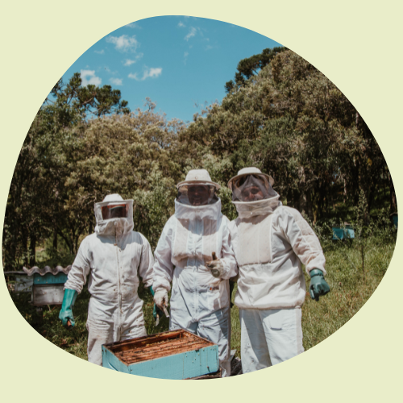

|  |
Jen, Kevin and Amaya founded JWK in 2021. This all began when everyone was trapped at home during the pandemic, and we were all looking for ways to pass the time. One day, the three founders came up with the idea of creating an informative website to help us relieve our boredom. They instantly began writing and studying, using their knowledge and talents. They were also determined to enjoy their lives, but they realized that in order to do so, they would have to be extremely cautious and take every precaution. There were a few contributing members at the time, but we concluded that if the website was going to be completed, it needed to be a collaborative effort. Kevin, Jen, and Amaya were all ambitious, and they quickly began to participate outside of the house, gathering to debate and act on subjects or postings. We wanted to build a website where users could read whatever they wanted without fear of being criticized. The idea was to provide a space where users could freely express themselves and brainstorm their ideas. |